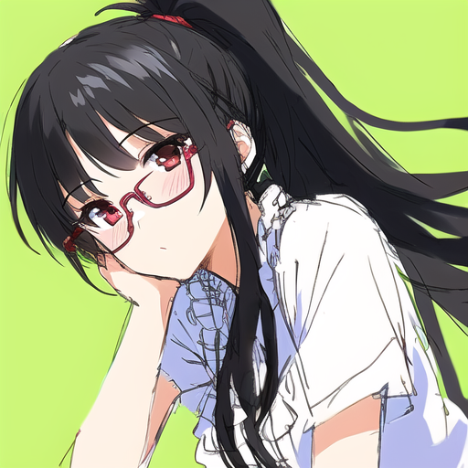

The image was made using Stable Diffusion and NovelAI, using the following settings.
masterpiece, best quality, black hair, messy hair, long hair, bangs, light blush, red eyes, red glasses, medium breasts, ponytail, (((1girl))), (frills), simple background, (sketch), (draft), lime background
(missing arms:1.5), (missing legs:1.5), (mutated hands and fingers:1.5), (long body:1.3), (mutation:1.2), (poorly drawn:1.2) , (blurry), anatomical nonsense, bad anatomy, bad animal ears, bad breasts, bad collarbone, bad digit, bad ears, bad eyes, bad face, bad feet, bad gloves, bad hairs, bad hands, bad knee, bad lips, bad mouth, bad pantie, bad proportions, bad shadow, bad shoes, bad tails, bad teeth, bad thigh gap, bad tongue, cracked mouth, deformed, disfigured, duplicate, extra arms, extra breasts, extra calf, extra digit, extra ears, extra eyes, extra feet, extra knee, extra legs, extra shoes, extra thighs, fewer digits, fused animal ears, fused breasts, fused cloth, fused collarbone, fused digit, fused ears, fused eyes poorly drawn eyes, fused face, fused feet, fused fingers, fused gloves, fused hairs, fused hand, fused lips, fused mouth, fused seam, fused shoes, fused teeth, fused thigh gap, low quality, malformed, malformed feet, malformed hands, malformed limbs, normal quality, one hand with less than 5 digit, one hand with less than 5 fingers, one hand with more than 5 digit, one hand with more than 5 fingers, poorly drawn animal ears, poorly drawn breasts, poorly drawn cloth, poorly drawn ears, poorly drawn face, poorly drawn feet, poorly drawn gloves, poorly drawn hairs, poorly drawn hands, poorly drawn lips, poorly drawn mouth, poorly drawn shoes, poorly drawn teeth, poorly drawn thigh gap, ugly, JPEG artifacts, artist name, bar code, blurred, censored, cropped, error, lowres, mosaic, signature, text, text font ui, username, watermark, worst quality, (loli), (monochrome), nsfw
Steps: 50, Sampler: DPM2, CFG scale: 11, Size: 512x512, Clip skip: 2
I do not have the seed anymore. I also did some inpainting on the hair to fix colors.
